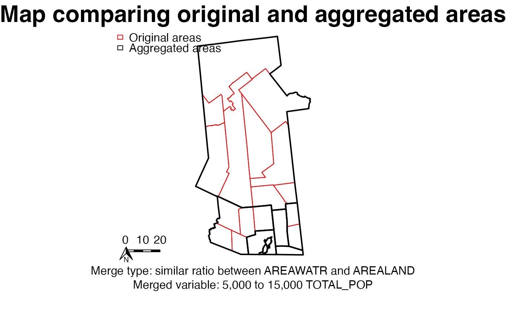

This function draws two maps on top of each other with only the polygon boundaries visible, so that polygon sizes and compositions can be compared. It is designed to be saved to a recordPlot object for later rendering in a PDF rather than displayed directly.
plotGATcompare(areaold, areanew, mergevars, gatvars, closemap = FALSE)A spatial polygons data frame.
A second spatial polygons data frame that ahould have the same outer boundary as the first one.
A list of settings for the aggregation, including type of aggregation (mergeopt1) and, if relevant, the variables to compare, similar1 and similar2.
A list of objects created by the GAT tool. It contains the strings aggregator1 and aggregator2, which are numeric variables in the area, and the numbers minvalue1 and minvalue2.
A boolean to denote whether to close the map window after the map is drawn and saved.
If plotting directly, the display may be distorted. For best results, save to a recordPlot object and write to PDF.
# define mapping variables
gatvars <- list(
myidvar = "ID", # character variable of unique values
aggregator1 = "TOTAL_POP", # numeric variable
aggregator2 = "TOTAL_POP", # numeric variable
minvalue1 = 5000, minvalue2 = 5000,
maxvalue1 = 15000, maxvalue2 = 15000,
boundary = "COUNTY" # character variable of non-unique values
)
# define merge type
mergevars <- list(
mergeopt1 = "similar", # can be similar, closest, or least
similar1 = "AREAWATR", # numeric variable
similar2 = "AREALAND", # numeric variable without any zeros
centroid = "geographic"
)
# draw the map
plotGATcompare(areaold = hftown, areanew = hfagg610k,
mergevars = mergevars, gatvars = gatvars)
